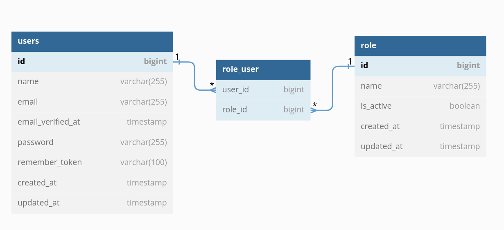

Database Relationships Project
Many To Many
Ilustrasi database schema
Tabel Role
1. Membuat model role
<?php
namespace App\Models;
use Illuminate\Database\Eloquent\Factories\HasFactory;
use Illuminate\Database\Eloquent\Model;
class Role extends Model
{
use HasFactory;
}
2. Membuat migration file untuk membuat tabel role dan tabel role user
<?php
namespace App\Models;
use Illuminate\Database\Migrations\Migration;
use Illuminate\Database\Schema\Blueprint;
use Illuminate\Support\Facades\Schema;
class CreateRolesTable extends Migration
{
public function up()
{
Schema::create('roles', function (Blueprint $table) {
$table->id();
$table->string('name');
$table->boolean('is_active')->default(false);
$table->timestamp();
});
}
public function down()
{
Schema::dropIfExists('roles');
}
Tabel Role User
1. Membuat model role user
2. Membuat migration file untuk membuat tabel role dan tabel role user